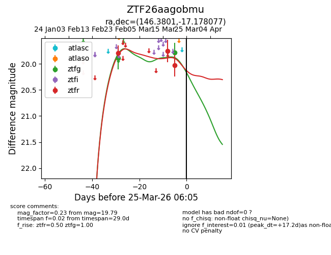
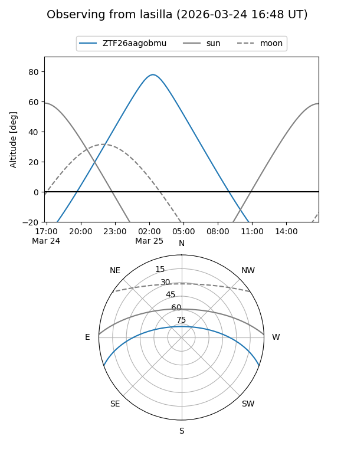
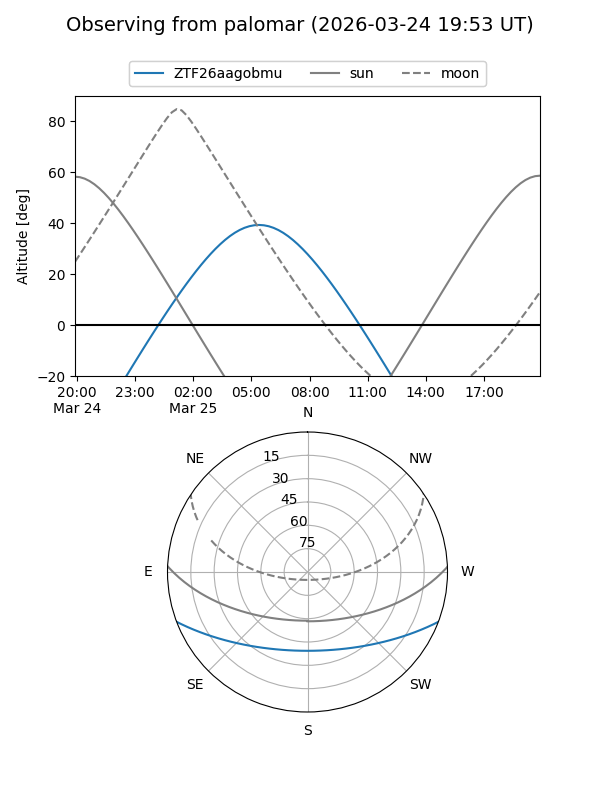
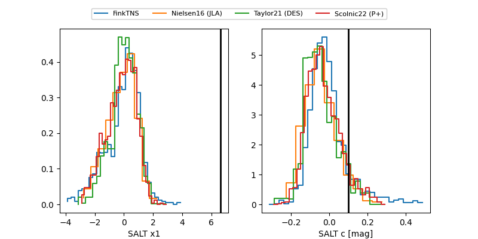

ZTF26aagobmu
Target ZTF26aagobmu at 2026-03-25 06:07
Aliases and brokers:
FINK: link
Lasair: link
ALeRCE: link
alt names
ZTF26aagobmu (ztf,fink_ztf)
Coordinates:
equatorial (ra, dec) = 146.3801,-17.17808
equatorial (HMS+DMS) = 09:45:31.22,-17:10:41.08
galactic (l, b) = (252.0237,+26.79819)
Flags:
Photometry:
last ztfg=19.79, ztfr=20.03
2 ztfg, 3 ztfr detections
Lightcurve

Visibility


Additional plots
